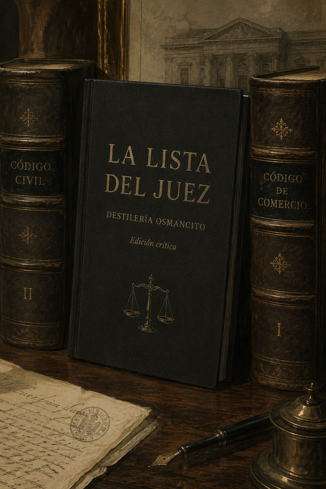
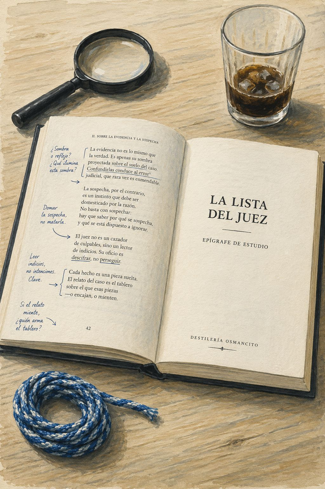
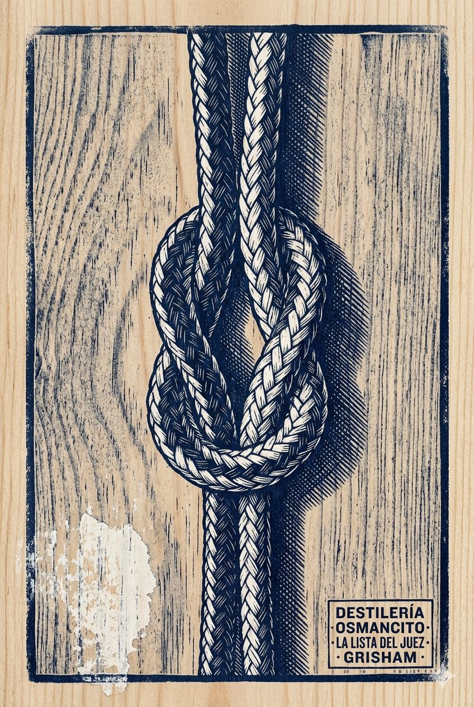
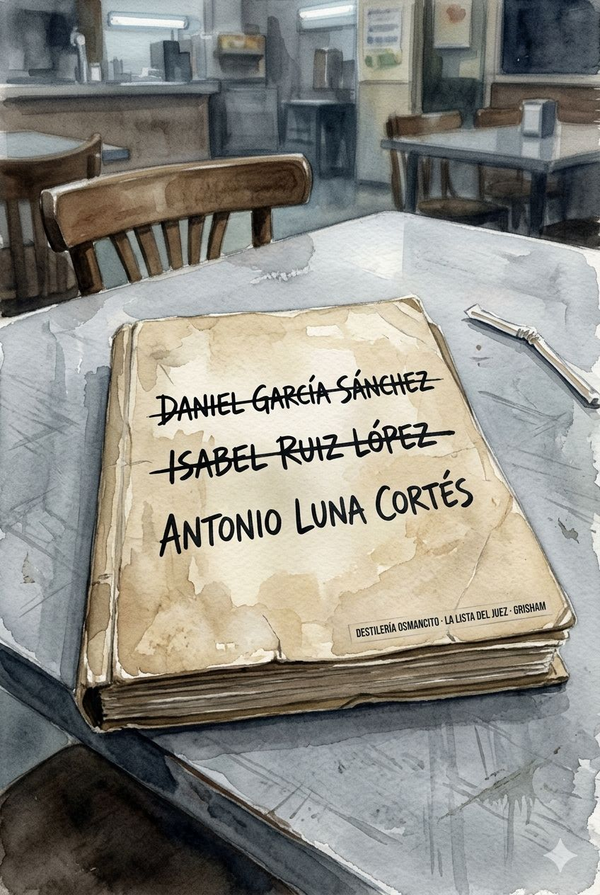
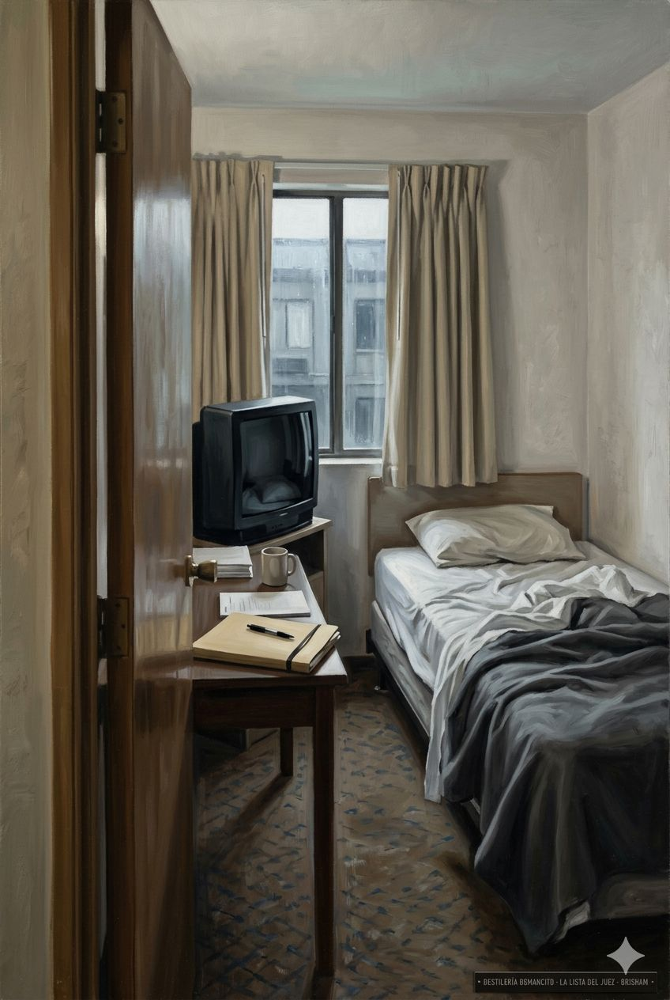

Lo primero que hace este texto es llegar. Sin preparación, sin ornamento: llega. Una puerta que alguien abre desde adentro antes de que toques. El ritmo es funcional como un pasillo largo, bien iluminado, sin cuadros en las paredes, y uno camina sin resistencia. No pesa. No se resiste. Fluye con la eficiencia ligera de una máquina bien calibrada, y esa ligereza es su temperatura: no fría, no cálida —templada, controlada. Lo que permanece antes de pensar es la sensación de que alguien sabe exactamente lo que está haciendo, que no hay un centímetro de tela sobrante, y que eso es, simultáneamente, su virtud y su límite.
La arquitectura es la de un reloj. Cuarenta y seis capítulos que giran alrededor de un eje doble: Lacy Stoltz, investigadora de conducta judicial, y Jeri Crosby, hija obsesionada que durante veinte años acechó al asesino de su padre. El texto las pone en órbita la una alrededor de la otra —Jeri empuja, Lacy resiste, luego cede— y esa tensión es el motor narrativo real.
El mecanismo central es el conocimiento asimétrico: Jeri sabe; las instituciones no saben; Lacy aprende. Esta asimetría produce la tensión sostenida durante cuarenta y cinco capítulos, y Grisham la administra con disciplina de ingeniero. El antagonista —el juez Bannick— aparece oblicuamente durante casi toda la novela, filtrado a través del miedo de Jeri y los papeles de investigación, lo cual es una decisión inteligente: mantiene el horror en el registro de la suposición, donde suele ser más eficaz que en el de la confirmación.
El texto alterna dos registros: la escena de asesinato —ejecutada con frialdad clínica, sin regodeo, casi burocrática en su precisión— y la escena de investigación institucional —con su baja política, sus presupuestos recortados, sus funcionarios cansados. Esta alternancia no es accidental: el texto argumenta, estructuralmente, que el crimen y la institución que lo persigue comparten el mismo idioma de la rutina.
La debilidad arquitectónica está en el final. El suicidio de Bannick opera como un deus ex machina encubierto: resuelve sin confrontar. El corpus construye veinte años de acecho y cuarenta y cinco capítulos de tensión para llegar a una resolución que el propio antagonista administra. La estructura dice que el mal se destruye solo cuando ya no puede sostenerse —lo cual es quizás verdad, pero le priva al texto de la colisión que prometía.
Lo que vive en este corpus es Jeri Crosby. Lacy es el vehículo institucional —simpática, competente, la cara legítima de la historia— pero Jeri es la fuerza que mueve el texto. Jeri es el arquetipo del duelo que no puede cerrarse hasta que encuentra forma: veinte años de investigación amateur, alias, habitaciones de hotel, el miedo físico de saber el nombre del asesino de tu padre y que el asesino sea un juez. Eso tiene peso. El corpus lo trata con respeto, sin sentimentalizarlo, y esa contención es probablemente la decisión estética más honesta del libro.
El contexto es inseparable de la lectura. Grisham opera desde una tradición muy específica: el thriller legal norteamericano como forma de pedagogía cívica. El corpus no es solo un thriller; es una exposición de cómo funcionan —o no funcionan— los mecanismos de control institucional sobre el poder judicial en Florida. La Comisión de Conducta Judicial, con su presupuesto recortado cuatro años consecutivos, sus funcionarios que se marchan, su liderazgo en colapso, no es decorado: es el argumento. El texto dice que las instituciones diseñadas para vigilar al poder judicial son precarias, subcapitalizadas y dependientes de que alguien externo —una mujer obsesionada, una amateur— haga el trabajo que el Estado no puede o no quiere hacer.
Lo que el corpus hace —más allá de lo que dice— es construir credibilidad institucional a través de la textura de lo burocrático. Las reuniones, los presupuestos, los formularios, los cuarenta y cinco días de evaluación: todo eso tiene el peso de lo observado, no de lo inventado. Grisham ha estado dentro de esas salas o ha hablado con suficientes personas que estuvieron, y ese conocimiento se filtra en la prosa como sedimento, sin ser declarado.
El límite experiencial del corpus es la temperatura. La máquina funciona demasiado bien para dejar cicatriz. El lector avanza sin resistencia y eso es un placer eficiente —pero el placer eficiente no es el placer del asombro. Jeri merece más que lo que el texto le da: merece la novela que está dentro de esta novela, la del duelo de veinte años, que aquí aparece resumida en sus contornos funcionales pero nunca se habita del todo. El corpus elige contar esa historia en lugar de vivirla. Es una elección legítima. No es la única posible.
Un objeto que pesa lo justo para no hacerse notar — y esa es exactamente su forma de peligro.
Hay corpus que anuncian lo que son desde la primera frase. Este no anuncia: demuestra. Se instala con la confianza discreta de quien conoce el terreno y sabe que no necesita levantar la voz. Nombrar lo que es este corpus —una máquina narrativa sobre el duelo y la accountability— no es lo mismo que decir lo que dice: que una mujer buscó durante veinte años al hombre que mató a su padre y que el Estado no pudo, o no quiso, buscar antes.
Título — La Lista del Juez (The Judge’s List, 2021) Autor — John Grisham Año — 2021 Género — Thriller legal Extensión estimada — ~107.000 palabras · 46 capítulos Idioma original — inglés Palabra más frecuente con contenido — había (785 ocurrencias). El tiempo que domina el corpus es el pretérito imperfecto: el tiempo de lo que persistía, de lo que duraba. No el de lo que ocurrió sino el de lo que no terminaba de ocurrir. Confirma el tono: una novela habitada por el pasado que no cierra. Ratio — ~107.000 palabras del corpus / ~1.800 palabras de este análisis ≈ 59×
Lacy Stoltz, investigadora veterana de la Comisión de Conducta Judicial de Florida, recibe la denuncia de una mujer que usa alias y afirma saber quién mató a su padre hace veinte años: un juez de distrito en activo. Lo que empieza como una evaluación burocrática de cuarenta y cinco días se convierte en la persecución de un asesino en serie que ha operado durante décadas bajo la protección del cargo. El texto es la historia de cómo dos mujeres, por caminos radicalmente distintos, convergen sobre un mismo hombre que el Estado no había alcanzado.
Lacy Stoltz — investigadora de conducta judicial, veterana de la CCJ, narradora institucional del corpus. Jeri Crosby — hija del segundo asesinado por Bannick, académica en autoexilio, autora real de la investigación. Ross Bannick — juez de distrito, Pensacola; asesino en serie con lista de agravios que se remonta veinte años; antagonista que el texto mantiene en penumbra casi toda la novela. Darren Trope — investigador subordinado de Lacy; función de alivio cómico y músculo logístico. Sadelle — investigadora de apoyo, enferma crónica, voz de la experiencia institucional escéptica.
El juez Ross Bannick lleva veinte años asesinando sistemáticamente a personas que lo ofendieron en algún punto de su vida — un despido, una carta de rechazo, una disputa, un abuso sufrido en la infancia. El método es siempre el mismo: golpe en la nuca, estrangulamiento con cuerda de nailon, ballestrinque doble como firma. Jeri Crosby, cuyo padre —profesor de Derecho— fue la segunda víctima en 1992, dedica dos décadas a reconstruir el patrón antes de que nadie lo vea. Cuando se convence, llega a Lacy Stoltz usando alias y entrega una denuncia formal que la CCJ no puede ignorar pero tampoco sabe bien cómo manejar. La investigación avanza a trompicones: la institución tiene presupuesto recortado, personal escaso y jurisdicción limitada. Lacy termina involucrando al FBI. Bannick, al sentir que el cerco se cierra, destruye toda evidencia que conservaba —registros, discos duros, notas— y se suicida en una clínica de rehabilitación antes de ser arrestado. Una huella dactilar lo vincula con dos asesinatos en Biloxi; el resto queda en conjetura. La novela cierra con Lacy comunicando los resultados a las familias de las víctimas y eligiendo, por primera vez, su propia vida sobre la institución.
El conocimiento sin poder frente al poder sin conocimiento. Jeri sabe quién es el asesino desde mucho antes que cualquier institución; las instituciones tienen la autoridad para actuar pero no el conocimiento para hacerlo. El texto pregunta, sin formularlo nunca en voz alta: ¿qué hace una persona con la verdad cuando las estructuras que deberían recibirla son demasiado frágiles o demasiado lentas?
La paciencia del mal y la paciencia del duelo. Bannick espera décadas para matar a quienes lo ofendieron; Jeri espera décadas para encontrarlo. El corpus construye una simetría perturbadora entre el tiempo del asesino y el tiempo de la víctima: ambos organizan su vida alrededor de una ausencia que no pueden dejar ir.
La institución como ficción funcional. La CCJ existe, opera, tiene formularios y plazos y cuarenta y cinco días de evaluación — pero es incapaz de arrestar a nadie, de proteger a nadie, de resolver nada por su propio peso. El texto no denuncia esto; lo exhibe con una indiferencia que es más severa que la denuncia.
Vivo — La mecánica del thriller: la investigación, el proceso burocrático, la acumulación de indicios, las reuniones de equipo. También la textura de la institución subcapitalizada: presupuesto recortado, personal que rota, normas que nadie sigue. Accesible sin mediación.
Sepultado — El duelo de Jeri Crosby. El corpus lo menciona en sus contornos pero nunca lo habita: veinte años de obsesión, la ruptura con su hermano, el divorcio implícito de cualquier vida que no girara alrededor del asesino de su padre. Está adentro pero cubierto por la función narrativa que el texto le asigna a Jeri: ser el motor de la trama, no su centro emocional. Requiere destilación.
Cerrado — El cuerpo institucional como personaje. La CCJ no es decorado sino protagonista silencioso: una entidad diseñada para vigilar el poder que no tiene poder suficiente para vigilar nada. El corpus trabaja esta paradoja de forma sostenida sin nombrarla nunca como tal. Declarar esto es una propuesta de lectura, no una certeza.
Cerrado — La autoría del crimen como acto de archivo. Bannick lleva listas, registros, notas; destruye todo antes de morir. El texto sugiere, sin desarrollarlo, que el asesino necesitaba su propio sistema de memoria tanto como sus víctimas. La lista del título no es solo un instrumento del crimen: es una forma de existir. Propuesta, no certeza.
Ausente — La perspectiva de las víctimas que no son Jeri. Los diez asesinados de Bannick aparecen como nombres en un expediente. El corpus no entra en ninguno de ellos con la misma profundidad que entra en el padre de Jeri, y ese padre tampoco aparece: solo su ausencia. Lo que el corpus eligió no contar también es información sobre lo que el corpus es.
Jeri como figura central desplazada — Operación sobre la zona sepultada: leer el corpus a contrapelo de su arquitectura, rastreando lo que Jeri hace, dice y evita decir para reconstruir el duelo que la novela elige no habitar. Resultado: un retrato de la obsesión como forma de vida y de la investigación amateur como duelo sublimado.
La institución como argumento — Lectura de la CCJ como sistema: qué puede, qué no puede, por qué. Cotejo entre la mecánica institucional que el texto describe y la pregunta que el texto deja sin hacer sobre las condiciones que permiten que un juez asesine durante veinte años sin ser detectado. Resultado: el thriller como crítica estructural encubierta.
La simetría de las paciencias — Análisis comparativo de Bannick y Jeri como personajes construidos en espejo: tiempo de espera, método de acumulación, relación con la memoria y el archivo. Resultado: lectura de la novela como estudio del tiempo largo del daño — tanto el de quien daña como el de quien fue dañado.
El final como elección estética — Lectura del suicidio de Bannick y el cierre romántico de Lacy como decisiones que revelan qué tipo de novela quiso ser este corpus y a qué precio. Resultado: diagnóstico de la tensión entre la ambición temática del libro y su resolución genérica.
La palabra había — Análisis de la temporalidad del corpus: qué hace el imperfecto como tiempo dominante en una novela sobre la justicia que llega tarde. Resultado: lectura estilística de cómo la gramática del texto encarna su tema.
Objeto cerrado, lomo solo
Libro abierto con instrumentos

La cuerda en reposo

El expediente que no se abre

La habitación de hotel después

Una investigadora de la Comisión de Conducta Judicial recibe una llamada de una mujer que usa alias. La mujer sabe demasiado sobre el equipo de investigación, actúa con más inteligencia que sus interlocutores y pronuncia, al final del capítulo, la palabra “asesinato”. El capítulo instala a la vez el mundo institucional —frágil, mal pagado, con rotación de personal ridícula— y la amenaza que lo va a sacudir.
La veterana que se pregunta cuánto cuesta seguir
Dar esa cifra era como admitir la derrota. Parecía mucho tiempo.
Doce años en la misma silla. La cifra que Lacy pronuncia al responder una pregunta rutinaria le devuelve su propia vida como un reflejo desfavorable. No se trata de una crisis, sino de algo peor: una toma de conciencia tranquila. El lector ya sabe que Lacy está preparada para irse antes de que el corpus le dé una razón para quedarse.
La joya del alias
—De momento me llamo Margie, pero uso otros nombres.
La economía de esta línea es feroz. En nueve palabras quedan instalados el misterio, la precaución y el humor involuntario de la situación. El interlocutor ríe. El lector también. Pero la risa tarda en apagarse.
La camarera que no mira
La chica no alzó la vista ni se le cruzó por la cabeza saludar a una clienta, así que Lacy decidió prescindir de más cafeína.
Hay toda una sociología del trabajo invisible en esta frase. La camarera con el teléfono rosa es la cifra exacta de una institución que también ha dejado de mirar. Funciona como imagen sin querer serlo.
Capítulo de transición entre el primer contacto y la revelación del móvil. Jeri Crosby deja de ser “Margie” y empieza a ser una persona con historia.
La reunión pasa de una cafetería pública a una sala privada. Jeri habla de su padre, del bufete de Derecho, del alumno que explotó en clase. El nombre de Bannick todavía no aparece pero ya está en la sala, implícito en cada frase. El capítulo termina con la pregunta sobre “el periodista de Little Rock” y la voz de Lacy con la mano izquierda temblando.
La caja de cinco centímetros que no se abre
El expediente tenía cinco centímetros de grosor y toda la pinta de estar organizado de manera impecable.
La carpeta que Jeri no abre todavía funciona como el cuerpo del delito antes de que haya delito confirmado. El grosor es una medida de los años. La impecabilidad, un indicio de quién lleva la investigación.
La línea más corta del capítulo
—Asesinato.
Jeri cierra los ojos antes de decirla. Los abre en cuanto la dice. La palabra llega entre comillas y en párrafo propio, separada del resto como si el texto también necesitara un instante de silencio.
El juego de la voz
Mujer, culta, sin ningún tipo de acento, de unos cuarenta y cinco años, tres arriba, tres abajo. Lacy siempre probaba suerte en el juego de la voz.
El pequeño hábito de Lacy —calcular edad, clase, procedencia desde la voz— dice más sobre ella que cualquier descripción directa. Es el hábito de alguien que ha aprendido a leer sin datos. Y que sabe que aun así puede equivocarse.
Las gafas que no ven
Las gafas formaban parte del atuendo, un disfraz sutil.
La única frase del capítulo que es más de lo que dice. Jeri lleva años con disfraces, con alias, con identidades de papel. Las gafas de cristal pega son la versión más visible de lo invisible.
Lacy sola en casa, con el perro, después de la primera reunión con Jeri. Busca en internet el nombre del único juez que encaja con los datos y lo encuentra en diez minutos: Ross Bannick. El capítulo es de digestión: Lacy absorbe lo que acaba de ocurrir y empieza a construir una opinión sobre si creerlo.
La señal de tráfico
En el primer cruce se encontró con una señal de ceda el paso que siempre le recordaba al accidente. Le resultaba curioso que ciertos objetos le provocaran ciertos recuerdos, y todas las mañanas miraba la señal y volvía al pasado.
Hay cicatrices que no se ven. Las que solo activan señales de tráfico ordinarias son las más duraderas. Grisham lo menciona de pasada y sigue. El corpus no sube el volumen. Eso también es una técnica.
El buen juez que nadie ha denunciado
A lo largo de sus doce años en la CCJ, Lacy solo recordaba dos o tres casos menores en el veintidós. […] Bannick había recibido una estelar calificación de matrícula de honor por parte del colegio de abogados.
La ausencia de quejas como prueba de algo. El buen juez puede serlo porque es bueno, o porque es muy inteligente, o porque los dos no se excluyen. El corpus deja la ambigüedad abierta antes de cerrarla.
La pregunta que nadie había hecho
En la historia de Estados Unidos, ¿a cuántos jueces se ha condenado por asesinato mientras aún estaban en el cargo? […] A ninguno, que yo sepa. […] Exacto. Cero.
El número cero tiene un peso singular aquí. No es solo una estadística: es la garantía implícita que Bannick lleva explotando durante veinte años. La impunidad no es un accidente, es una arquitectura.
Capítulo de transición. Lacy maneja sus ambivalencias personales: la CCJ como callejón sin salida, el acuerdo económico pendiente, la posibilidad de que este caso sea su última gran actuación.
La cumbre que ya quedó atrás
Su caso más importante, su cumbre, ya había quedado atrás.
La palabra “cumbre” en pasado perfecto. Una vida donde el mayor logro ya ocurrió y uno sigue sentado en el mismo escritorio. No es amargura: es la descripción clínica de cierto tipo de carrera que el corpus conoce bien.
El costo de ser la única veterana
Como veterana, como la única veterana, era importante que Lacy diera ejemplo.
El orgullo y la soledad en la misma frase. Ser la única que queda no es un honor; es una advertencia.
Jeri lleva a Lacy a Pensacola. Le muestra la tumba de Thad Leawood, la primera víctima. Le muestra el vecindario donde creció Bannick, la iglesia, la casa de la familia, los terrenos donde vive ahora. Una visita guiada por el pasado de un asesino que ninguna de las dos ha conocido.
La detective de papel
He creado un mundo ficticio, Lacy, y en él soy muchos personajes. Una periodista freelance, una reportera de sucesos, una investigadora privada e incluso una novelista, todas con nombres y direcciones diferentes.
Jeri ha construido durante veinte años una infraestructura de identidades falsas para acechar al hombre que mató a su padre. La frase es admirable y aterradora en la misma medida. Admirable porque funciona. Aterradora porque revela el precio que paga una vida cuando se organiza alrededor de una sola obsesión.
El cementerio como punto de partida
Se detuvo y, en silencio, señaló con la cabeza el último lugar de descanso de la familia Leawood.
Jeri no explica el cementerio. Lo señala. El silencio antes de hablar es parte del método: lo que calla pesa más que lo que dice. La primera víctima de Bannick es también la primera víctima de la infancia de Bannick. El corpus sugiere, sin declararlo, que hay una causalidad que la ley nunca va a poder juzgar.
Cinco teléfonos como mínimo
—¿Cuántos teléfonos tienes? —¿Uf, no lo sé. Cinco o seis, por lo menos.
La respuesta de Jeri a esta pregunta es la imagen más exacta de lo que cuesta vivir en el miedo durante dos décadas. Cinco o seis. Con tono de mujer que ha perdido la cuenta.
Lacy y Jeri en un restaurante de carretera. Jeri va desplegando la cronología de víctimas: las dos mujeres, el periodista, el abogado. Introduce el marco teórico del asesino en serie. Lacy pide que le cuente el método y la cuerda.
El experto aficionado
—Un psicópata tiene un trastorno mental grave y un comportamiento antisocial. Un sociópata es un psicópata versión premium.
Jeri no tiene formación en criminología. Lo que tiene es veinte años de lectura compulsiva y la motivación que no tiene ningún académico: su padre. Las definiciones son imprecisas, pero la persona que las formula sabe más sobre Bannick que todos los policías del corpus juntos.
La tarjeta de visita
La cuerda era solo para la gente especial.
Bannick llama “gente especial” a sus víctimas planificadas. La frase aparece en el capítulo 8, pero la lógica que la produce comienza aquí. Hay una lista, y estar en ella es un honor que nadie sobrevive para rechazar.
La firma del marinero
Todas las ligaduras estaban clavadas en la piel del cuello, atadas con el mismo nudo y abandonadas en la escena del crimen, como una especie de tarjeta de visita.
El ballestrinque doble como firma. Un hombre aprende un nudo de niño, en los Boy Scouts, bajo la dirección del hombre que lo violó. Veinte años después lo usa para matar a ese hombre. El nudo es la prueba de que nada en esta historia es accidental ni aleatorio. Todo tiene su origen en un lugar específico, en un momento específico, del que no se puede separar.
Capítulo de transición. Lacy consulta con Sadelle el precedente de denuncias anónimas. Jeri sigue llamando, sigue presionando. El mecanismo institucional se activa, aunque con reluctancia.
La que sabe todo y lo recuerda casi todo
Sadelle no solo lo sabía todo, sino que además lo recordaba casi todo. Ella era el archivo, el motor de búsqueda, la experta en las muchas formas en que un juez podía cargarse su carrera.
Sadelle —mayor, enferma, conectada al oxígeno, en silla motorizada— es la memoria de la institución. Que la institución dependa de una mujer que debería haber muerto hace años para conservar su historia es un comentario implícito sobre el estado del presupuesto y la gestión.
Se suicidó. Dijeron que fue accidental.
—¿Qué fue de él? —Se suicidó. Dijeron que había sido una sobredosis accidental, pero parecía sospechoso. Estaba hasta arriba de coca. Supongo que se fue como quería irse.
Sadelle narra el destino de un juez cocainómano con la misma cadencia que podría narrar el tiempo. Décadas en el mismo trabajo tienen ese efecto: lo trágico se vuelve anecdótico, no por insensibilidad sino por saturación.
La escena del asesinato de Lanny Verno en Biloxi. El asesino —llamado “Butler” en su propia mente— aparece por primera vez en acción. El capítulo describe el crimen con frialdad clínica y la conciencia estética del asesino ante su propia obra. Luego aparece Dunwoody en el peor momento posible. La segunda escena del crimen se gestiona como “daños colaterales”. El capítulo termina con el sheriff rastreando los teléfonos hasta un buzón de correos en Neely, Mississippi, donde el sobre está dirigido a la hija del sheriff.
El inspector de los cubrezapatos
Verno volvió a mirar hacia abajo y se fijó en que el inspector llevaba unos cubrezapatos desechables, de un suave color azul. «Qué raro», pensó durante un segundo.
La última percepción de Lanny Verno antes de que lo maten es la rareza de los cubrezapatos. El texto no subraya esto. Lo deja ahí, en su lugar exacto, y pasa. El lector tarda un instante en entender que acaba de ver el último pensamiento de un hombre.
La escena admirable
Por lo demás, le pareció una escena admirable. El cuerpo estaba boca abajo, con los brazos y las piernas doblados en ángulos extraños. […] A primera vista, la siguiente persona que llegara a la escena pensaría que Verno había sufrido una mala caída. Sin embargo, cuando se acercara un paso más, la cuerda le contaría otra historia.
Bannick observa lo que ha hecho con la satisfacción del artesano. El texto adopta su perspectiva sin reprocharla. No hay narrador que intervenga para calificar la perversión. Esa neutralidad es la técnica más perturbadora del capítulo.
Marsha llama y él mira
El teléfono de Dunwoody empezó a parpadear y vibrar a las siete y dos minutos. La llamada era de «Marsha». No dejó ningún mensaje de voz. Marsha esperó seis minutos y volvió a llamar. […] «Debe de ser su esposa», pensó Butler. Era muy triste y todo eso, pero él apenas tenía capacidad de sentir pena o remordimiento.
Bannick sostiene el teléfono de un hombre al que acaba de matar y ve a la esposa llamando. Lo que siente es casi nada. La distancia entre ese casi y la nada absoluta es toda la psicología del personaje en una pantalla que vibra.
La dirección de la hija del sheriff
En el reverso había una etiqueta con una dirección impresa en una fuente extraña: «Cherry McGraw, 114 Fairway n.° 72, Biloxi, MS 39503». Exhaló, murmuró un «¡Mierda!» y estuvo a punto de dejar caer el sobre.
El sobre con los teléfonos robados dirigido a la hija del sheriff que investiga el caso. El juego del gato y el ratón tiene aquí su primera jugada explícita. Bannick no necesita esconderse: necesita que alguien, en algún sitio, sepa que está ahí.
Capítulo de transición. Charlotte Baskin —“Cleopatra”— recibe el resumen de las acusaciones y decide derivarlas a la policía estatal sin investigar. Jeri protesta. La burocracia como obstáculo de lo que ya es urgente.
La mujer que fracasa hacia arriba
Una abogada cuya reputación se centraba en los cotilleos sobre lo mal que se maquillaba y lo ajustadas que eran sus prendas y no en sus habilidades legales estaba condenada a trabajar para siempre en el inframundo de la profesión.
El retrato de Cleopatra es feroz e injusto al mismo tiempo. Feroz porque el texto no escatima detalles físicos con los que la disminuye. Injusto porque ese mismo texto parece notar que el problema va más allá del maquillaje. Lo deja sin resolver.
La única pregunta que importa
—No tengo muy claro que haya ningún caso, Jeri.
La frase con la que Lacy resume su posición después de tres reuniones, cuatro horas en coche y un expediente de seiscientas páginas. No es indiferencia: es el límite de lo que una institución infrafinanciada puede decirle a una mujer que lleva veinte años esperando.
Fin de semana en Rosemary Beach. Lacy y Allie hablan del futuro en la orilla, entre ostras y copas de vino. Allie revela que lleva un año ahorrando para un anillo pero no se ha atrevido a comprarlo. Nadie resuelve nada.
El problema de los cuarenta
No estaba segura de adónde buscar ni qué quería, así que había seguido demasiado tiempo en la CCJ y ahora le preocupaba haber desperdiciado oportunidades mejores.
La frase más honesta del capítulo. No hay dramatismo ni autocompasión: hay la descripción exacta de cómo una vida se desliza por inercia cuando nadie la interrumpe.
El anillo que no se compró
—Llevo un año ahorrando para comprarte un anillo. […] No te lo he comprado porque no estoy seguro de si lo aceptarías.
El hombre que ahorra para un anillo pero no lo compra porque no sabe si sería aceptado. El hombre que espera que la decisión llegue sola. La mujer que lo escucha y también espera. Una relación de tres años narrada en dos frases que se cancelan mutuamente.
Jeri en su apartamento, de noche, comunicándose con su fuente anónima —“Kenny Lee”— que le trae la noticia del asesinato de Lanny Verno en Biloxi. El capítulo describe el ecosistema de identidades falsas, apartados de correos y comunicación cifrada que Jeri ha construido durante años.
El hombre de Camden, Maine
Él tampoco conocía su nombre. En internet, Jeri empleaba el seudónimo de «LuLu», y eso era lo único que el hombre quería o necesitaba saber.
Dos personas que se comunican durante diez años y no saben el nombre del otro. Cada uno paga al otro en efectivo dentro de libros de bolsillo enviados a apartados de correos. Hay algo medieval en la arquitectura de esta red de espionaje aficionado. Y algo completamente contemporáneo.
Trescientos asesinatos por estrangulamiento al año
Todos los años, en Estados Unidos, se producían unos trescientos asesinatos clasificados de manera oficial como ahogamiento /estrangulamiento /asfixia.
El dato que hace posible que Bannick se esconda durante veinte años. No es su inteligencia lo que lo mantiene invisible: es el ruido de fondo. La escala de la violencia ordinaria hace que un asesino meticuloso sea estadísticamente indistinguible.
La junta de la CCJ acepta la dimisión de Cleopatra y le ofrece a Lacy el cargo de directora interina. Ella lo rechaza una vez, lo piensa durante veinticuatro horas y lo acepta. El dinero ayuda. La idea de tener autoridad sobre el caso Bannick también.
El barco que se hunde
—El barco se hunde y necesitamos estabilidad.
Earl Hatley ofrece el cargo con la frase más desmotivadora posible. El texto no parece darse cuenta. Lacy sí se da cuenta. El lector también. Y aun así acepta.
La razón real
De repente, Jeri Crosby irrumpió en los pensamientos de Lacy. ¿Y si sus sospechas eran ciertas? ¿Y si los asesinatos continuaban? Como directora, interina o no, tendría autoridad para hacer lo que quisiera con la denuncia de Jeri.
La razón institucional para aceptar el cargo —estabilizar la agencia— no es la razón real. La razón real es Jeri Crosby y la posibilidad de que alguien esté matando. Lacy no lo dice en voz alta. Lo piensa y acepta. El corpus practica la elipsis como pudor.
Jeri investigando el pasado de Lanny Verno para encontrar la intersección con Bannick. Halla un arresto en Pensacola en 2001, un expediente manipulado, el nombre de Norris Ozment. Contrata a un detective privado —Rollie Tabor— para que busque a Ozment. Tabor lo encuentra. Confirma que Bannick y Verno tuvieron un enfrentamiento judicial. Jeri siente que se le doblan las rodillas.
La detective profesora
Jeri era profesora titular, daba clases tres días a la semana y sus horarios de oficina eran más o menos regulares. […] Estaba demasiado ocupada con aquellos crímenes como para convertirse en una profesora sobresaliente como su padre.
La ironía es brutal: Jeri no puede ser la profesora que fue su padre porque dedica la vida a encontrar al hombre que lo mató. El sacrificio no tiene nombre. El texto lo menciona de pasada, como quien describe el clima.
El expediente que alguien limpió
Había sido una entrada simple para la detención de un tal Lanny L. Verno […]. El nombre de la parte denunciante aparecía tachado con un rotulador negro y grueso.
El expediente manipulado es la primera prueba material de que Bannick anticipó las investigaciones. Alguien —el propio Bannick, ya entonces, cuando era solo abogado— borró su nombre de un documento público. El asesino que borra su propio rastro antes de que haya rastro que borrar.
Capítulo de transición. Cleo se va. Lacy anuncia los cambios. Jeri llama para felicitarla. Tabor ha encontrado a Ozment. La maquinaria continúa.
Los regalos de la directora
La nueva directora anunció de inmediato varios cambios en las normas de la oficina: trabajar desde casa cuando se quiera, viernes libres en verano, nada de reuniones innecesarias, café de marca.
Pequeñas victorias sobre la burocracia deprimente. El texto las enumera con la seriedad de quien sabe que no son pequeñas cuando has estado demasiado tiempo sin ellas.
Primera reunión formal: Jeri entrega la denuncia firmada como “Betty Roe” y revela el décimo asesinato —Lanny Verno, Biloxi—. Le pasa a Lacy una memoria USB con seiscientas páginas de investigación. Le da la clave cifrada por mensaje separado.
Betty Roe que prefiere no figurar
—Prefiero no figurar en su lista, Lacy. —Ya, y yo.
La frase más corta del capítulo y la que más información transporta. Lacy dice “ya, y yo” con un tono que podría ser una broma o podría no serlo. El corpus no explica. La amenaza ya es mutua.
Las dos mujeres de Bannick
—Bannick tiene problemas con el sexo. […] A Eileen la mató porque se rio de él. […] No sé qué pasó entre Ashley Barasso y Bannick […]. Pero fueron juntos a la facultad de Derecho, a la misma clase.
Las mujeres que Bannick mató no son víctimas colaterales: son el punto donde la humillación sexual se convierte en venganza. El corpus no editorializa. Solo lista. Pero la lista tiene una lógica que el lector completa.
La USB de veinte años
—Está todo ahí, más de seiscientas páginas de investigación, artículos de prensa, expedientes policiales, todo lo que he encontrado y podría ser útil.
El trabajo de una vida entera comprimido en un dispositivo de almacenamiento. Jeri lo entrega como si le estuviera dando algo de escaso valor. Es todo lo que tiene.
El grupo de trabajo —Lacy, Darren, Sadelle— lee la denuncia. Discuten. Sadelle pregunta por qué están metidos en esto. Lacy explica la estrategia de Jeri: usarlos como puente hacia la policía mientras permanece en el anonimato. Deciden proceder durante treinta días y reevaluar.
La que se jubila de sus propios pulmones
—Creo que ha llegado el momento de que me jubile. […] Aquel comentario provocó la risa de los otros dos, pese a que Sadelle no era conocida por su humor. Todos sus compañeros de la CCJ esperaban que muriera antes de jubilarse.
Sadelle hace el único chiste del capítulo. El texto lo explica inmediatamente con una crueldad sin malicia: todos esperan que muera antes de retirarse. La vejez y la enfermedad como forma de fidelidad institucional involuntaria.
Mantenme fuera de su lista
—A mí mantenedme fuera de su lista.
La última palabra de Sadelle en la reunión. Nadie ríe esta vez.
Lacy y Darren viajan a Biloxi para reunirse con el sheriff Black y el inspector Napier. En el camino, Darren diserta sobre asesinos en serie. En la reunión, Lacy describe la cuerda con tanta exactitud que los policías saben que sabe algo. Acuerdan compartir información. Al final, el sheriff revela que tienen una imagen del vehículo.
El récord de Samuel Little
—Un tío llamado Samuel Little confesó noventa asesinatos y estuvo en activo hasta hace diez años. Las autoridades siguen investigando y hasta ahora han confirmado unos sesenta.
El número sesenta como fondo. Bannick, con sus diez u once víctimas conocidas, no es un récord: es un ejemplo de eficiencia. El corpus construye el horror por contexto comparativo, no por descripción directa.
La cuerda que Lacy describe sin verla
—Diría que sí. Un trozo de unos setenta y cinco centímetros, de nailon, con doble trenzado, de calidad naval, azul y blanca o verde y blanca. […] Atada a la base del cráneo con un nudo de ballestrinque doble.
Lacy describe la cuerda de los crímenes de Biloxi sin haberla visto. Los policías se quedan sin habla. El momento en que una investigadora burocrática demuestra que sabe más que los investigadores de homicidios es uno de los pocos instantes genuinamente dramáticos del corpus.
El viaje a Marathon. Reunión con el jefe Turnbull. Los Cayos, el barco de Kronke, la escena del crimen. Y luego, en cursiva, la perspectiva de Bannick: compró un barco, alquiló un amarre, esperó, mató a Kronke en el agua.
Aquí tienes tu muy brillante futuro
—Aquí tienes tu muy brillante futuro, H. Perry.
Bannick repite la frase de la carta de rechazo mientras estrangula al hombre que la firmó veintitrés años antes. La venganza postergada en una sola línea que condensa todo el móvil del corpus. El hombre que archivó una humillación durante dos décadas para citarla en el momento exacto en que la devuelve.
El barco del asesino
No era un barco especialmente bonito, ni mucho menos tan elegante como el que tenía el objetivo, pero no pretendía impresionarlo.
Bannick elige el barco para matar, no para ser visto. La frase describe la lógica de un asesino que solo piensa en resultados y que lleva sus instrumentos con el mismo pragmatismo con que un carpintero lleva sus herramientas. Lo que hace fría la sangre es la normalidad del razonamiento.
Jeri en su apartamento, redactando en una Olivetti antigua —sin conexión a internet, sin posibilidad de rastreo— las cartas anónimas que enviará a Bannick. Tres poemas y una nota. Los pone en el correo desde dos ciudades distintas. Conduce de vuelta escuchando jazz, sonriendo en el espejo.
La máquina de escribir de 1985
El procesador de textos, un antiguo Olivetti de primera generación con una pantalla pequeña y poca memoria, de alrededor de 1985. Jeri lo había comprado de segunda o de tercera mano en un almacén de antigüedades de Montgomery.
Jeri contraataca al asesino en serie más tecnológicamente preparado del corpus usando una máquina de escribir comprada en un almacén de antigüedades. Hay algo perfectamente calculado en la elección: para que algo no deje rastro digital, tiene que ser anterior a lo digital.
El poema que hace reír y aterrar al mismo tiempo
Jeri consiguió reírse a carcajadas de la imagen de Bannick leyendo su poema.
La mujer que ha vivido veinte años con miedo se ríe mientras imagina al hombre que la aterroriza desmoronándose ante unos versos malos. La risa no cancela el miedo: coexiste con él. Eso es exactamente lo que el corpus no dice con estas palabras, pero produce con ellas.
Capítulo de transición. Reunión del grupo de trabajo. Darren confirma la conexión Bannick-Kronke. Sadelle sugiere ir a la policía estatal. Lacy promete que no, que esperará la señal de Jeri. Lacy visita a su abogado para ponerse al día con la demanda pendiente.
Apunta un nombre ahora, te machaca años después
—Lo agregó a su lista —observó Sadelle—. Apunta un nombre ahora, te machaca años después.
Sadelle, siempre medio dormida, siempre conectada al oxígeno, formula la tesis del corpus en once palabras. Es la única descripción que necesita la psicología de Bannick y llega de la persona más inesperada de la sala.
Bannick descubre que alguien ha consultado el expediente de Verno en el almacén de la policía de Pensacola. Un detective privado llamado Jeff Dunlap, que en realidad es Rollie Tabor. Bannick activa su red de espionaje, conecta los puntos, y al final del capítulo llega a la conclusión de que está siendo acechado por alguien cercano al caso Burke.
La Cámara Acorazada
La Cámara Acorazada, como la llamaba con orgullo, aunque solo cuando hablaba consigo mismo, era un despacho de unos 4,5 metros cuadrados, insonorizado, ignífugo, resistente al agua, resistente a todo.
El santuario de Bannick es la imagen material de su doble vida. Un espacio que no existe en ningún registro oficial, dentro de un centro comercial propiedad suya, al que nadie en el mundo tiene acceso. La construcción no es la de un criminal: es la de un hombre que lleva décadas planificando la invisibilidad.
Si mañana muero
Si al día siguiente cayera muerto, sus ordenadores y teléfonos esperarían pacientemente durante cuarenta y ocho horas, luego se borrarían por completo.
La frase más elegante del capítulo. El sistema que se autodestruye en caso de muerte no es paranoia: es previsión. Bannick ha pensado en todo, incluyendo en su propia muerte como variable operacional.
Rafe, el trol invisible
Era habitual que se emplearan contraseñas estándar como “Admin” y “Contraseña”.
Bannick lleva años dentro de las redes de datos del gobierno de Florida usando un programa espía que llama “Rafe”. La débil seguridad informática de los organismos públicos no es un comentario cínico: es un dato técnico que el corpus trata como hecho verificable.
Bannick llama a Norris Ozment usando el pretexto de ser un viejo amigo buscando información sobre Verno. Ozment confirma el vínculo. Bannick le envía un correo con un archivo adjunto infectado. Rafe entra en el Pelican Point. Luego Bannick rastrea el coche de alquiler de Tabor hasta Hertz en Mobile. De Hertz, a Atlas Finders. De Atlas, a Rollie Tabor. Y al final del capítulo, a una foto: el mismo hombre en tres lugares distintos. Bannick envía a Rafe de vuelta a los archivos policiales y encuentra a Jeri Burke Crosby.
El correo como trampa
Bannick contestó a Ozment dándole las gracias y adjuntó al correo un folleto inútil. Cuando Ozment lo abrió y lo descargó, Maggotz se coló por la puerta trasera.
El vector de infección es un folleto institucional. El archivo adjunto más inocuo imaginable. Bannick ha aprendido que la puerta trasera más eficiente es la que nadie espera ver abierta.
Jeri Burke Crosby
La hija de Burke se llamaba Jeri Crosby. Cuarenta y seis años, divorciada, con una hija. Según la última actualización, vivía en Mobile y era profesora de ciencias políticas en la South Alabama.
Bannick encuentra a Jeri en el árbol genealógico de sus víctimas. No la conoce, nunca la ha visto. Pero en este momento, en la Cámara Acorazada, a las tres de la madrugada, la acaba de convertir en objetivo. El corpus lleva veinte capítulos construyendo este instante y lo resuelve en cuatro líneas.
La noche de Bannick con el martini. Revisando archivos de víctimas, descartando candidatos, llegando a la conclusión de que “la persona” que lo acecha tiene que ser un familiar de Bryan Burke. Encuentra a Jeri. Confirma que el detective Tabor trabaja en Mobile. La conexión es demasiado obvia para ignorarla.
Las tres estrategias
Una de ellas era marcharse […]. Otra estrategia era quedarse y luchar […]. La última estrategia era la más fácil. Podía ponerle fin a la partida y llevarse sus crímenes a la tumba.
Bannick analiza sus opciones con la frialdad de un gerente ante un problema operativo. Las tres son viables. Elegirá la tercera en el capítulo 41, pero no antes de intentar la segunda.
El miedo a parar
El miedo a que lo cogieran no venía motivado por el miedo a pagar las consecuencias. Era, más bien, miedo a tener que parar.
La línea más honesta sobre la psicología de Bannick en todo el corpus. No es el castigo lo que teme. Es la interrupción. La lista no terminada. Los nombres que quedan.
Capítulo de transición. Jeri llama un sábado por la mañana para advertir a Lacy de que Bannick podría saber que lo investigan. Luego Gunther, el hermano de Lacy, aparece con su avioneta.
El hermano que no puede evitarlo
Pero, a pesar de sus problemas, Gunther dormía a pierna suelta todas las noches y atacaba cada día con entusiasmo y confianza.
El optimismo de Gunther —irresponsable, irreprimible, generador de deudas— es el antídoto involuntario al mundo sombrío en que trabaja su hermana. El corpus necesita este personaje, aunque no lo sabe explicar.
Bannick se viste de Zegna y sale a cenar con Helen, su “novia de conveniencia”. Cena en el club de campo de Pensacola. Piensa en sus crímenes mientras la banda toca Motown. Sale al patio, fuma un puro con Mack MacGregor, el mejor abogado litigante de la zona y el hombre al que llamaría si lo arrestaran.
El asesino más brillante
Él, que vestía de Zegna y se codeaba con los ricos, era un juez muy respetado, admirado por gente importante, y también era, al menos en su opinión, el asesino más brillante de la historia de Estados Unidos.
La vanidad de Bannick tiene la precisión del delirio de grandeza. No dice “uno de los más brillantes”: dice “el más brillante”. Y en este momento, sentado entre los ricos del club de campo, mientras la banda toca, lo cree. Lo más perturbador es que el corpus no lo contradice del todo.
La primera y la segunda razón para no matar a Rangle
Había dos personas en la sala a las que le gustaría matar. Rangle era la segunda.
El juez con una lista de agravios personales se sienta a cenar con dos de sus candidatos potenciales y los descarta mentalmente mientras le da la mano al cirujano de estiramientos faciales. La normalidad de la cena es inseparable de la perversidad del pensamiento. El corpus los hace convivir sin aspavientos.
Bannick lleva a Helen borracha hasta su casa, se escapa hacia su otro despacho, sigue investigando a Tabor, intenta piratear su teléfono pero no puede. Al final, encuentra una foto de Tabor en los archivos de su secretaria. Luego, mientras duerme en el sofá, Rafe sigue trabajando. A las tres de la madrugada, Bannick sale hacia Mobile.
La vigilancia que nunca duerme
Bannick había utilizado un teléfono desechable para llamar a Jess y explicarle que era un escritor de novelas policiacas […]. La línea se cortó, la llamada había terminado. No le sirvió para nada, salvo para castigar a un Leawood.
Bannick llama al hermano de su primera víctima, el jefe de scouts que lo violó, solo para castigarlo con la incomodidad de la llamada. El crimen que no está en la lista: la crueldad telefónica anónima. Esto es lo que hace con su tiempo libre.
Lacy y Darren se reúnen con los dos inspectores de la policía estatal de Florida, mandados en secreto a buscar a Bannick. La noticia del Ledger —vinculando cuatro asesinatos con personas de Pensacola— ha cambiado el paisaje. Bannick se comunica a Diana Zhang que tiene cáncer y se toma una baja. La historia se acelera.
El FBI que aún no está
—Entonces ¿por qué no acudimos ya a la policía estatal? […] Porque ya están trabajando en el caso, están en ello desde el asesinato de Kronke.
La policía estatal ya investigaba. El FBI aún no ha llegado. Jeri lleva veinte años trabajando sola. La CCJ lleva cuarenta días en el caso. El corpus es una historia sobre cómo se llega tarde a todo lo que importa.
La distancia como coartada
—Si te fijas en los ocho asesinatos […] todos están a una distancia asumible en coche desde Pensacola […]. No tuvo ni que coger aviones ni que alquilar coches ni que pagar habitaciones de hotel.
Darren descubre que Bannick ha construido su zona de operaciones en torno a la autonomía de un vehículo propio. Sin rastros de aerolíneas ni hoteles ni alquileres. Solo gasolina pagada en efectivo y carreteras libres de noche.
Reunión en DeFuniak Springs: Lacy, Darren, el sheriff Black y el inspector Napier. La gran noticia: el FBI encontró una huella parcial de pulgar en el teléfono de Verno. No hay coincidencia en ninguna base de datos. El laboratorio cree que las huellas han sido alteradas quirúrgicamente.
La huella que no coincide
—El FBI cree que se ha alterado las huellas.
Cuatro palabras que condensan una operación de años. Bannick no solo ha planeado los crímenes: ha planeado la posibilidad de ser atrapado con evidencia forense y ha eliminado esa posibilidad antes de que existiera. El corpus describe a un criminal que se adelanta a sus propias capturas.
El nudo en el sobre de la hija
—No tengo muy claro por qué tan inteligente mandó los teléfonos a la hija del sheriff.
La pregunta que Black no puede responder. Bannick no necesita esconderse: necesita que alguien sepa que está ahí. Esta es la contradicción que lo define y que eventualmente lo destruye.
Bannick lee el último poema —sobre su primer fracaso electoral— en el buzón de su casa. Sale hacia Santa Fe en avión. Mata a Mal Schnetzer en una caravana de Sugar Land, Texas. El asesinato más planificado del corpus: meses de preparación, un apartamento alquilado, un personaje falso, la espera. Lo hace con un tono casi burocrático.
Ciento treinta y tres mil dólares
—Ciento treinta y tres mil dólares —dijo Bannick casi escupiendo las palabras—. Unos buenos honorarios que me robaste. Dinero que me merecía y que necesitaba con urgencia.
El único asesinato en que Bannick habla mientras mata. Se lo dice a un hombre agonizante. El monólogo no es para la víctima: es para él mismo. El recuento de veinte años de agravio pronunciado en voz alta, por fin.
Él no mataba a gente inocente
Él no mataba a gente inocente. Seguro que Dunwoody era un hombre decente con una familia y una empresa.
Bannick tiene un código ético interno sobre sus propios crímenes. El código incluye la distinción entre víctimas merecidas y “daños colaterales”. La monstruosidad de esta ética no está en su contenido sino en su existencia: la de un asesino que se considera moralmente coherente.
Jeri visita a su hija Denise en Ann Arbor. Por primera vez en la novela, Jeri sale del mundo del caso. Conoce a Link, el novio de su hija. Le cuenta a Denise que ha encontrado al asesino de su padre.
La hija que crece fuera del caso
Para el resto de la familia, el asesinato era un tema a evitar.
Jeri ha organizado su vida entera alrededor del asesinato. Su hija, su hermano Alfred, el resto de su familia lo han organizado alrededor de la ausencia de ese tema. Dos familias paralelas, separadas por lo que no se nombra.
Denise no quiere saber el nombre
—No me digas cómo se llama, ¿vale? No creo que esté preparada para algo así.
La hija de Jeri pide lo que la propia Jeri tardó veinte años en poder pronunciar. El nombre del asesino como objeto demasiado pesado para tener en la boca. La diferencia es que Jeri tuvo que cargarlo. Denise todavía puede elegir no hacerlo.
Herman Gray, leyenda retirada del FBI, recibe a Lacy y Allie en su casa de Florida. Lacy le presenta los ocho asesinatos sin nombres. Herman elabora el perfil: hombre blanco, cincuenta años, soltero, trabajo importante, conoce a todas sus víctimas. Cuando Lacy le revela que es juez, Herman exhala.
El perfil que ya sabemos
—Hombre blanco, de cincuenta años, comenzó sus travesuras cuando rondaba los veinticinco. Soltero, es probable que no se haya casado nunca.
El perfil de Herman Gray es preciso y llega tarde. En el corpus ya conocemos a Bannick. El valor del capítulo no está en el descubrimiento del perfil sino en la reacción de un experto que ha visto de todo cuando descubre que hay algo que no había visto.
Siempre hay más
—¿Alguno más? […] Ninguno más, que nosotros sepamos. […] Podéis estar seguros de que los hay.
Herman completa el perfil de Bannick con la única certeza que el corpus nunca confirma pero tampoco niega: hay más víctimas. El número que Jeri fue descubriendo de a uno durante veinte años probablemente no es el número real. Esa es la última pieza que el corpus deja sin cerrar.
El artículo del Ledger vincula los asesinatos. Jeri lo envía codificado a Lacy. Lacy decide que la evaluación ha concluido: remitirá el caso al FBI. Informa a Jeri. Jeri cuelga.
La cómplice
—A partir de ahora, tendrás las manos manchadas de sangre.
Jeri le lanza esta acusación a Lacy antes de colgar cuando la CCJ se niega a actuar. El corpus vuelve a ella aquí, ya no como amenaza sino como descripción retroactiva: Lacy actuó, pero Bannick sigue libre.
El caso que ya no es de nadie
—Ni que decir tiene que nuestro trabajo ha terminado.
Vidovich, en la primera reunión con el FBI, le dice a Lacy que su trabajo ha terminado. El corpus tiene cuatro capítulos más.
Bannick descubre, a través de Rafe, que el FBI se reúne con los inspectores de Biloxi en Pensacola. Escucha las siglas HPP: huella parcial de pulgar. Vuelve a casa de madrugada y empieza a limpiar todas las superficies. Luego viaja a Mobile y pone un localizador GPS en el coche de Jeri.
HPP
—HPP. […] A toda prisa comprobó las cámaras de vigilancia y los sistemas de seguridad de su casa […]. No se había producido ninguna entrada. […] El viaje se le hizo interminable.
Tres letras que derrumban el mundo de Bannick. El corpus ha pasado veinte capítulos construyendo su seguridad. Aquí empieza el derrumbe. La escala del pánico y la velocidad de la reacción son la medida inversa de la confianza que tenía.
Limpiar sin haber tocado nada
Mientras maldecía para sí, no paraba de murmurar: «HPP». […] Las huellas latentes pueden durar años.
Bannick friega durante horas su propia casa para destruir huellas de dedos que quizá ni existen. Es la imagen perfecta de lo que le hace la paranoia a la inteligencia: la vuelve contra sí misma hasta que ya no sabe qué es real y qué es el miedo.
La gran reunión del FBI en Pensacola. Bannick los observa desde un hotel con un telescopio. Adentro, Lacy presenta el caso, el FBI toma el control y promete mantenerla informada. Mientras ella vuelve a Tallahassee, Bannick regresa a su otro despacho, lo limpia y se dirige hacia Mobile.
Observar sin poder oír
No tenía forma de saber lo que se estaba diciendo allí. Rafe no había conseguido introducirse en la red.
Por primera vez en el corpus, Bannick no puede oír. La red del FBI es la única que resiste a Rafe. El observador omnisciente queda ciego ante el único sistema que importa. El telescopio lo sustituye: ve las caras pero no las palabras.
Bannick entrega los poemas en persona en el apartamento de Jeri. Ella lo ve por la cámara del timbre: tres segundos, una máscara de carne, una gorra. Llama a la policía. Hace la maleta. Huye en coche a medianoche.
Tres segundos de vídeo
Duraba seis segundos, aunque a él solo se le veía durante tres. Esos tres segundos bastaban.
El encuentro que Jeri lleva veinte años temiendo dura tres segundos frente a una cámara de timbre. La máscara, la gorra, el sobre. Y la certeza de que sabe quién es ella.
La pistola en la mesita
Una pistola 9 milímetros automática, que tenía en la mesita de noche.
Jeri vive armada desde hace años. La pistola está en el lugar correcto pero en el momento equivocado: Bannick entra mientras ella duerme.
La cabaña. Jeri se despierta encadenada, con una capucha. Bannick quema expedientes en la chimenea. Interroga a Jeri sobre lo que sabe Lacy. Jeri habla para ganar tiempo. Al final, Bannick le pide que llame a Lacy para traerla hasta allí y le pone una cuerda alrededor del cuello para ilustrar las consecuencias de negarse.
Ya que estamos aquí
—¿Cuánto número sería, el nueve, el diez, el once? —Por lo menos.
Jeri le pregunta cuánto número sería entre sus víctimas. Bannick dice “por lo menos” sin el menor interés en calcular. El número ya no le importa. El corpus tampoco lo cierra.
Quemar los expedientes
Bannick se acercó a una pila de expedientes que fue arrojando uno por uno a las llamas, despacio.
Los expedientes que Bannick quema en la chimenea son el otro lado del archivo que Jeri ha construido durante veinte años. Ella conservó todo. Él destruye todo. El corpus es la historia de esa asimetría.
La única victoria posible
—Te he pillado.
Jeri le dice esto a Bannick mientras está encadenada en una cabaña en el bosque, a su merced, sin teléfono, sin zapatos. No tiene nada que decir que sea verdad. Pero lo dice.
Capítulo de transición. El FBI busca a Bannick. Diana Zhang habla con dos agentes en el partido de béisbol de su hijo. Lacy recibe la llamada de Vidovich: “¿Estás sola?” Gunther llama para volar hasta Tallahassee. Lacy lo convence de acompañarla a Crestview.
¿Estás en algún lugar seguro?
—¿Estás en algún lugar seguro? […] Lacy miró a su alrededor. Miró a su perro. Miró la puerta principal, convencida de que estaba cerrada.
La pregunta de Vidovich convierte un apartamento ordinario en un espacio potencialmente amenazado. Lacy mira al perro como parte de la evaluación de riesgo. El corpus no hace broma con esto.
Bannick obliga a Jeri a llamar a Lacy. Jeri actúa bien el papel, inventa una “prueba física”, da el nombre del motel. Gunther y Lacy deciden ir. En la cabaña, Bannick le inyecta a Jeri ketamina para mantenerla inconsciente mientras él va a buscar a Lacy.
Lacy, cielo
—Lacy, hola, soy Jeri, ¿cómo estás, cielo?
El tono falso de Jeri es la primera señal para el lector. Lacy no lo detecta porque Jeri miente bien, como Bannick le ha dicho antes. El corpus usa el lenguaje de la amistad como arma involuntaria.
El talento para la mentira
—Ves, tienes talento para la mentira.
Bannick le hace el único cumplido del corpus a la mujer que lo ha estado acechando durante veinte años.
El motel Bayview. Bannick corta la luz y ataca a Lacy en el pasillo. Gunther sale de la nada y los tres caen al suelo. Bannick golpea a Gunther, entra en su habitación a buscar el portátil y huye por las escaleras. Lacy llama a Vidovich. Jeri, en la cabaña, es encontrada por dos adolescentes que entran a robar y la creen muerta.
Gunther sale de la nada
Los tres cayeron al suelo amontonados. Lacy gritó y consiguió ponerse en pie mientras Bannick lanzaba golpes contra su atacante.
El hombre que ha sobrevivido veinte años de asesinatos perfectos es detenido por el hermano promotor inmobiliario con deudas que vino a comer ostras fritas. El corpus no hace chiste de esto. Pero lo permite.
Eran adolescentes buscando herramientas
Los dos chavales, de quince y dieciséis años, habían llegado en quad antes del anochecer. […] Solo encontraron a una mujer negra muerta, tumbada en la cama.
Jeri es rescatada porque dos adolescentes entraron a robar una cabaña abandonada en busca de aparejos de pesca. La justicia llega por el canal más improbable que el corpus podía construir.
El FBI registra la casa y el despacho de Bannick. Todo limpio. Bannick huye en coche hacia Birmingham. Jeri es trasladada al hospital. A la una de la madrugada, llama a Lacy y ambas lloran. Bannick deja el Tahoe en el aeropuerto y alquila otro coche.
La casa de nadie
El frigorífico prácticamente vacío, como todos los cubos de basura. Había montones de ropa y toallas lavados y tirados sobre la cama.
La casa de Bannick, registrada por el FBI, parece la habitación de alguien que ya se ha ido. No por descuido sino por diseño: ha pasado días eliminando su presencia antes de que nadie llegara a buscarla.
Las dos mujeres en el apartamento de Lacy
Jeri les refirió, por su propio bien, las conversaciones que había mantenido con Bannick. El juez no había reconocido explícitamente ninguno de los asesinatos, pero había aceptado a regañadientes partes del relato de la profesora.
Jeri habla durante horas sobre lo que Bannick dijo en la cabaña. Es todo lo que tiene. Y no es suficiente para un tribunal. El corpus lo sabe. Jeri lo sabe. Nadie lo dice en voz alta.
Bannick se registra en el Pecos Mountain Lodge. Llega sobrio, con una historia de alcohólico funcional, paga en efectivo el primer mes y se instala. Manda el sobre a Diana Zhang con el testamento. Lacy, Jeri y el FBI celebran: hay una orden de arresto. Jeri firma una declaración. El FBI busca a Bannick.
El alcohólico que miente mejor que todos
—Nunca es suficiente, y cada vez es peor. Por eso he venido.
Bannick interpreta al alcohólico arrepentido con la misma competencia con que ha interpretado todos sus personajes. El doctor Kassabian lo cree. El corpus tampoco lo culpa: es un buen actor.
Querida Diana
Cuando leas esta carta estaré muerto.
La primera línea de la carta que Bannick le escribe a su secretaria. Directa, sin sentimentalismo, sin disculpa. La carta de un hombre que organiza su propia muerte con la misma eficiencia con que organizó las ajenas.
Bannick desayuna tranquilo, vuelve a su habitación, se toma cuarenta pastillas de oxicodona y sumerge los diez dedos en ácido clorhídrico. Lo encuentran muerto tres horas después. Las manos son irreconocibles. El FBI llega tarde.
La última precaución
Sus manos le ardían y comenzó a notarse débil. Cuando le fallaron las rodillas, se agarró al lavabo, le quitó el tapón y abrió la puerta. Se dejó caer sobre la cama.
Bannick se destruye los dedos antes de morir para que las huellas no puedan tomarse después. Lo hace mientras las pastillas hacen efecto. La imagen es la de alguien que calcula hasta el último segundo disponible.
Está muerto y no volverá a matar
—No. Está muerto y no volverá a matar.
Lacy le dice esto a Jeri cuando ella insiste en que Bannick “se ha salido con la suya”. El corpus pone las dos verdades frente a frente y no elige una: está muerto y nadie pagará.
El FBI confirma la muerte. Vidovich muestra el vídeo del cadáver. Los dedos. Las manos destruidas. Jeri pide que paren el vídeo en el primer plano del rostro de Bannick muerto y lo mira. Debate sobre las huellas, el testamento y la incineración. Lacy le dice a Jeri que todo ha terminado.
Lo miro muerto
—Páralo justo ahí. Quiero verlo muerto. He esperado mucho tiempo.
Jeri necesita ver el cadáver. No como voyerismo: como cierre. Veinte años esperando que un hombre muera y el corpus le concede exactamente eso: la imagen en una pantalla, en una sala de reuniones del FBI, con luz fluorescente.
La obsesión que no desaparece con él
Había leído en algún sitio que muchas veces llegamos a admirar, incluso a amar, aquello mismo que odiamos de manera tan obsesiva.
La única frase del corpus donde Jeri reconoce que Bannick era parte de su vida de una manera que va más allá del odio. No es una confesión romántica: es la descripción fría de cómo una obsesión coloniza una persona entera.
Capítulos de transición. Diana Zhang gestiona el testamento, las amputaciones, la incineración. El FBI registra los coches y la cabaña: sin huellas. Jeri vuelve a Mobile. El grupo de trabajo de la CCJ recibe la última llamada de Jeri: ha encontrado la camioneta de Biloxi en un desguace en Milton. Van a Dusty’s.
La heredera involuntaria
No había pensado en la muerte del juez Bannick […] y, desde luego, tampoco había pensado nunca que fuera a incluirla en sus planes de herencia.
Diana Zhang, la única persona leal a Bannick durante diez años, hereda todo lo que tiene. El corpus no editorializa. Solo registra que los asesinos también tienen vidas completas y secretarias que los quieren a su manera.
No te pongas vestido
—Dusty’s cierra a las cinco. Daos prisa. No te pongas vestido.
Las instrucciones de Jeri para ir a un desguace a buscar una camioneta son la última operación activa del corpus. Jeri coordinando, Lacy ejecutando. La dinámica que ha movido todo el libro permanece hasta el final.
Dos semanas después. Lacy y Allie en los Cayos. Visitan a la familia Kronke en Grassy Key para comunicarles la probable culpabilidad de Bannick. La familia escucha. No hay respuestas definitivas. Al final, en la arena, Lacy le propone matrimonio a Allie y planifica la boda, la luna de miel, el cambio de carrera.
¿Debemos sentirnos aliviados, enfadados o qué?
Jane Kronke apretó los dientes y comentó: —No sé qué decir. ¿Debemos sentirnos aliviados, enfadados o qué?
Lacy se encoge de hombros: no puede responder eso. La honestidad de esta respuesta es la más importante del corpus. Hay crímenes que no se resuelven en el sentido que las víctimas necesitan que se resuelvan. El corpus lo sabe y no miente.
Es obvio que tú no fuiste capaz
—Acabo de pedírtela. Es obvio que tú no fuiste capaz de hacerlo. Y aceptaré ese anillo ahora mismo.
Lacy organiza su propia propuesta de matrimonio mientras el hombre que debería haberla hecho se ríe. El corpus cierra con el mismo tono que abrió: una mujer que decide, que no espera, que toma las cosas en sus manos. Que lleva doce años en un callejón sin salida y elige salir por su propio pie.
El siguiente capítulo
—Si volvemos, ya decidiremos cuál es nuestro siguiente capítulo.
La última frase de Lacy antes de que les ofrezcan champán de una boda ajena. No es un final: es la descripción de alguien que ha aprendido a vivir sin saber lo que sigue.